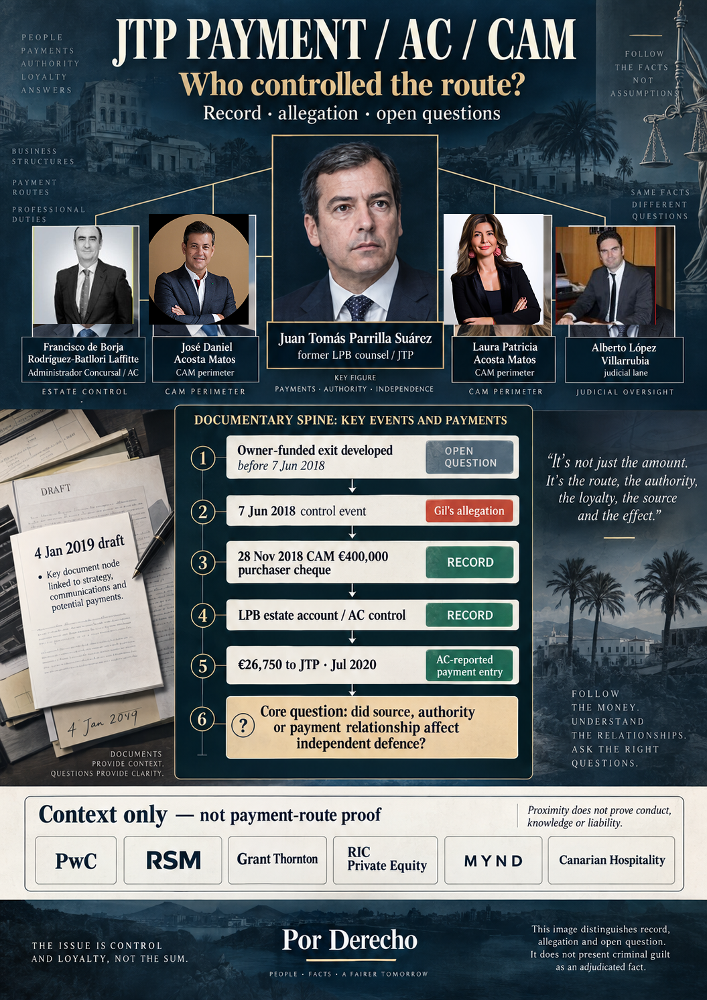

Los registros ONA/Clubotel, Stoneweg y Cuatrecasas sitúan una arquitectura materialmente desarrollada de operación, DD, term sheet y salida concursal antes del 7 de junio de 2018. El cierre no estaba garantizado.
00 / EJE PENAL-FISCAL
Cinco preguntas antes de los remedios civiles, mercantiles o concursales.
La pregunta organizadora no es si un letrado podía cobrar alguna vez con fondos de la masa. Es si una secuencia de actos u omisiones, puntos de control, comunicaciones y relaciones económicas, atribuida actor por actor, justifica investigación penal por posible interferencia con una salida ya desarrollada y con la independencia de la defensa de LPB.
Mensajes contemporáneos registran la toma de posesión afirmada por CAM/Comunidad y la respuesta inmediata: denuncias, fotos/vídeos y petición de tutela. Autoridad, actores e intención penal son cuestiones separadas.
La posterior operación CAM de 400.000 €, la cuenta de masa de LPB y la función de pago/informe del AC abren la pregunta de fuente y control. La no convalidación de 2019 y las actuaciones posteriores forman parte de la prueba contraria.
Los registros de mayo–junio de 2020 muestran conversaciones AC/JTP sobre honorarios, intermediación y una secuencia de «paz». El 1 de junio el letrado entrante ya trataba a Parrilla como antiguo letrado de LPB y discutía su posición sobre titularidad de honorarios y doble pago. El cliente rechazó expresamente la propuesta final de Parrilla el 12 de junio; un informe posterior del AC registra 26.750 € pagados.
La prueba exige fuente, autoridad, comunicaciones, conocimiento, cualquier condición o acto recíproco, efecto causal sobre defensa/salida y beneficio o perjuicio. La página no sustituye esos elementos por cronología.
Penal primero significa elementos primero, no etiquetas delictivas primero. El derecho civil, mercantil y concursal sigue siendo esencial porque determina titularidad, autoridad, tratamiento de masa, deberes y remedios. Aquí funciona como presupuesto probatorio, prueba contraria y contexto de remedios. El orden es actor → acto/omisión → conocimiento → finalidad → efecto causal → beneficio/perjuicio → calificación jurídica.
Perspectiva penal contemporánea — 4 de enero de 2019. El propio borrador amplio de Parrilla no presentó el conflicto como meramente civil o concursal. Solicitó traslado al Ministerio Fiscal por posibles estafa procesal, alteración del proceso de liquidación y administración desleal, mientras impugnaba la disposición separada y la alegada entrega de posesión a CAM sin título. La presentación de ese borrador sigue sin acreditarse; su contenido y contexto de autoría son prueba documental directa.
LEER PRIMERO
¿Quién pagó al letrado de LPB?
{kind=link}

{kind=link}
{kind=link}
01 / SECUENCIA
Salida → venta → defensa → honorarios
Las condiciones operativas ONA/Clubotel se firmaron el 6 de junio de 2018. Los titulares desarrollaron vías de comprador y financiación, con pasos de cierre pendientes. El administrador vendió por separado instalaciones a CAM el 28 de noviembre de 2018 y consignó un cheque del comprador en una cuenta de LPB bajo su control. LPB pidió la escritura mediante escrito presentado el 10 de enero de 2019 y el juzgado denegó convalidar la venta el 24 de octubre. El informe de pagos del administrador de 21 de julio de 2021 consigna 26.750 € para el antiguo letrado de LPB, Juan Tomás Parrilla, como pagados en julio de 2020.
Alegación unitaria de Gil: mecanismo adverso funcional, no identidad jurídica. Gil alega que, en la ventana decisiva de 2018–2020, el interés del comprador privado, el control del AC sobre información, activos y pagos de la masa y la puerta judicial separada de protección/remedio operaron conjuntamente en su efecto práctico para neutralizar la representación independiente de LPB durante la salida financiada por los titulares y su defensa inmediata tras el 7 de junio de 2018. Regla anti-fragmentación / dominó: el episodio de honorarios es aguas abajo, no el origen. La correspondencia de mayo de 2018 documenta a ONA llevando a Stoneweg a Cuatrecasas para avanzar la operación, trabajar la due diligence y el term sheet y coordinar la vía concursal; la correspondencia del 7 de junio documenta denuncias inmediatas y preservación de prueba frente a la toma de posesión afirmada por CAM; y la cadena de 12 de junio de 2020 documenta un rechazo expreso de la propuesta final de Parrilla y el paso al incidente concursal. El rechazo de 2020 prueba directamente el rechazo de esa propuesta. La posición adicional de Gil —que constituye una pieza aguas abajo de resistencia frente a un mecanismo más amplio que, según alega, ya había perjudicado la salida financiada liderada por ONA— es una inferencia unitaria atribuida, no una afirmación de que el email de 12 de junio pruebe por sí solo cada acto anterior o elemento penal. No se afirma que los actores se convirtieran en una sola persona jurídica, que el juez fuera pagador o perceptor ni que la asociación por sí sola pruebe culpabilidad. Es un caso causal unido: aviso, deber, poder, acto u omisión, conocimiento y efecto de cada actor deben comprobarse individualmente, y cualquier mecanismo coordinado debe acreditarse con fuentes primarias. Se preservan las actuaciones protectoras del letrado; la alegación se refiere a ventanas decisivas y mecanismos de efecto.
02 / CIERRE DE FUENTES NATIVAS · 24 SEP 2026
Qué establecen ahora los registros de honorarios y autorización — y qué sigue sin cerrar.
Una nueva revisión acotada del corpus nativo conectado de correo y Drive refuerza la cronología de autorización, mientras mantiene abierta la trazabilidad bancaria.
La proforma de Parrilla de 29-may-2012 fija un presupuesto de 40.000 € + IGIC: 20.000 € + IGIC antes de la presentación y cinco pagos posteriores de 4.000 € + IGIC. Es presupuesto, no factura de 2020.
Parrilla propuso un honorario definitivo de 50.000 € + IGIC, afirmó haber recibido ya 32.250 € y situó el saldo en 17.750 € + IGIC. Dijo expresamente que necesitaba el visto bueno escrito de Gil/Patricia antes de proceder por cualquiera de las dos vías propuestas con el AC.
Jiménez trasladó la propuesta diciendo que no podía aceptarse. Patricia coincidió en que era inaceptable, dio por terminadas las conversaciones y dirigió al equipo hacia el incidente concursal.
Jiménez dejó escrito que el equipo había roto las negociaciones con Parrilla y el AC porque, según su valoración, intentaban condicionar el trabajo del equipo entrante a cambio del pago de honorarios. Es una valoración profesional contemporánea, no una resolución judicial.
El informe del AC de 21-jul-2021 consigna 26.750 € pagados en julio de 2020 a Parrilla por honorarios del letrado de la concursada. 26.750 € equivale numéricamente a 25.000 € + 7% IGIC y coincide numéricamente con un importe inmediato anterior; no demuestra qué propuesta, factura o autorización ejecutó el pago.
La búsqueda 12-jun→31-jul-2020 en las tres cuentas conectadas no localizó un visto bueno posterior de Gil/Patricia ni aceptación sustitutiva. Las búsquedas dirigidas en Drive no localizaron el adeudo bancario/abono receptor de julio de 2020. Son resultados acotados, no prueba de inexistencia universal.
Regla de conciliación
No comparar el pago bruto de 26.750 € directamente con el saldo base pre-IGIC de 17.750 € como si fueran magnitudes homogéneas. Los datos seguros son: Parrilla declaró 17.750 € + IGIC pendientes; el AC informó después de 26.750 € pagados; 26.750 € equivale a 25.000 € + 7% IGIC; y siguen sin localizarse factura/minuta final de 2020, autorización específica y trazabilidad bancaria concordante. Abrir control de cierre de fuentes →
03 / INVESTIGACIÓN PENAL Y PROFESIONAL
Por qué importa la relación de pago
La preocupación existiría con una cantidad mayor o menor. Cada cuestión requiere prueba y examen jurídico propios.
Gil caracteriza el intercambio como parte de un uso reiteradamente abusivo de la posición profesional y de una presión indebida. Manifiesta que Patricia, su pareja y representante local en Canarias, vivió el intercambio como amenazante y se sintió especialmente vulnerable mientras gestionaba localmente el asunto en su nombre, incluida la dimensión que Gil identifica de afrontarlo como mujer, en el contexto de los fallos, omisiones, actuaciones y negativas que atribuye a Parrilla. Su respuesta de 28 de mayo se conserva únicamente como evidencia de esa presión alegada y de la asimetría informativa. Aquí no se trata como consentimiento, renuncia, ratificación, negociación, asignación de honorarios ni autorización.
Un asesoramiento contemporáneo describió el crédito de costes concursales como perteneciente a los financiadores del lado cliente, no automáticamente al letrado o procurador. Conciliar esa posición con asignación, factura, IGIC, servicio y autorización.
Las instrucciones y el criterio letrado deben servir a LPB. Examinar si las conversaciones con un actor adverso influyeron en consejos, actuaciones judiciales o silencios.
El AC controlaba los pagos de la masa mientras él y LPB mantenían posiciones opuestas en un recurso. Examinar fundamento, motivación y garantías.
El cargo afecta a LPB y acreedores. Identificar servicios, factura, calificación como crédito contra la masa y vías de autorización o impugnación.
La expectativa de cobro puede importar antes del pago. Fijar fechas de propuesta y decisión y comprobar si el letrado esperaba fondos controlados por el AC.
Comparar negociación y pago con solicitudes, recursos, advertencias y oportunidades relativas a ONA y al hotel; preservar también las actuaciones protectoras.
CAM compró las instalaciones; el AC informó del ingreso en una cuenta controlada de LPB. Investigar vínculos sin dar por acreditado un pago directo de CAM al letrado.
Comprobar si estrategias, instrucciones o propuestas llegaron a intereses divergentes de LPB; el asiento de pago no demuestra revelación.
Examinar qué informó el letrado sobre el pagador, la base de los honorarios, las comunicaciones con el AC y cualquier conflicto que afectara a su juicio independiente. La respuesta de Patricia queda expresamente excluida como prueba de consentimiento o validación; las cuestiones relevantes son los deberes y actos del letrado, la información facilitada y el registro objetivo del pago.
Precisar qué acto u omisión cambió qué oportunidad de defender la venta unitaria o continuar la salida financiada; la conclusión del cierre no estaba garantizada.
La tutela y el remedio judiciales son una puerta causal distinta. Contrastar aviso exacto, poder, petición, acto u omisión firmados y efecto. Los actos del juez tienen prueba propia; aquí no consta que ordenara o recibiera el pago.
Si se prueba desvío desleal de fondos, cambio comprado de lealtad, concertación u ocultación dolosa, examinar elementos e intención individual. El asiento por sí solo no prueba cohecho ni delito.
Límite de la prueba
El cheque del comprador de 2018 y los honorarios de julio de 2020 son registros distintos. Falta conciliar cargos y abonos bancarios, factura/minuta final de 2020, autorización específica de pago, IGIC, servicios, incentivo anterior, conocimiento individual y causalidad. Este lector no utiliza la respuesta de Patricia de 28 de mayo para suplir autorización del cliente, consentimiento, renuncia, ratificación ni validación. LPB podía en principio pagar lícitamente a su propio letrado con dinero de la masa; es preciso comprobar esta relación concreta y su beneficio para LPB.
04 / PRUEBA DEL LECTOR HOSTIL
La mejor lectura adversa se muestra, no se oculta.
Es una simulación de red-team, no una declaración de ninguna parte adversa nombrada. Cada objeción formula la mejor defensa de buena fe que la página debe resistir.
| Proposición hostil | Qué permite decir el registro | Qué sigue abierto |
|---|---|---|
| «No existe transferencia CAM→JTP.» | Correcto. La página no alega transferencia directa. Pregunta si valor de origen CAM entró en un canal de masa controlado por el AC usado posteriormente para el pago al letrado. | Adeudo del comprador, abono LPB, libro completo, adeudo de 26.750 € y abono del perceptor. |
| «LPB podía pagar lícitamente a su letrado.» | Correcto en abstracto. Se investiga esta relación concreta: fuente, autoridad, información, independencia, condiciones y efecto. | Factura, encargo/base de honorarios, autoridad, IGIC, servicios y análisis de beneficio independiente. |
| «El cliente consintió o autorizó después el pago.» | La respuesta de 28 de mayo no se usa como consentimiento ni ratificación. El 1 de junio el letrado entrante ya trataba a Parrilla como antiguo letrado de LPB, discutía su posición sobre titularidad y doble pago y encauzaba los honorarios a través del equipo sucesor. El 11 de junio el propio Parrilla dijo necesitar visto bueno escrito de Gil/Patricia antes de proceder; el 12 de junio el cliente rechazó expresamente la propuesta. Una búsqueda acotada en tres buzones hasta 31 de julio no localizó autorización escrita posterior. | Cualquier autorización posterior, factura o acuerdo sustitutivo fuera del corpus acotado sigue siendo producible y reduciría materialmente este punto. |
| «El cliente sustituyó a Parrilla, no el AC.» | Correcto como causa formal inmediata del relevo. No se afirma que el AC lo destituyera ni que causara en exclusiva la sustitución. | Si pago/intermediación influyeron materialmente en decisiones profesionales o en el entorno del relevo. |
| «Parrilla también realizó actuaciones protectoras.» | Correcto y se conserva. La teoría se refiere a ventanas concretas, negativas/conflictos e intermediación/pago, no a inactividad universal. | Mandato, instrucción, respuesta y efecto causal acto por acto. |
| «2018 y 2020 están demasiado separados.» | El tiempo por sí solo no prueba nada. Fuentes separadas prueban la salida, la respuesta del 7 de junio, la liquidez posterior y el episodio de honorarios. El puente causal unitario sigue siendo alegación a comprobar. | Puentes de conocimiento y comunicaciones que conecten las etapas para cada actor. |
| «La trazabilidad bancaria está incompleta.» | Correcto. Es un vacío P0 visible, no ocultado. | Conciliación bancaria y de cuenta de masa completa. |
| «ONA quizá nunca habría cerrado.» | Correcto. Se afirma una salida materialmente desarrollada, no un cierre garantizado. | Condiciones de cierre, certeza de financiación, acceso/garantías requeridas y probabilidad contrafactual. |
| «Las aprobaciones posteriores curan la historia anterior.» | Las decisiones posteriores lícitas son prueba contraria material, pero no responden automáticamente a autoridad, conocimiento, finalidad o conducta anteriores. | Efecto temporal de cada auto, escritura, asiento registral y paso de restitución/conciliación. |
05 / FALSACIÓN + PRODUCCIÓN
Qué reduciría la hipótesis y qué debería obtener Fiscalía.
Prueba que reduciría o falsaría partes materiales
- Conciliación bancaria completa que muestre que los 26.750 € procedieron de liquidez lícita, independiente y ajena a la cadena de origen alegada.
- Un visto bueno posterior escrito del cliente o una autorización LPB independiente y válida para el pago concreto, tras revelar honorarios, fuente y conflicto.
- Comunicaciones completas AC–JTP que muestren administración ordinaria de honorarios sin condición, vínculo con «paz», intercambio de información o palanca profesional.
- Registros ONA/Stoneweg que demuestren falta de viabilidad material de financiación/cierre antes del 7 de junio o ausencia de perjuicio de condiciones de cierre relevantes.
- Registros actor-específicos que demuestren desconocimiento de la salida o de la consecuencia aguas abajo alegada.
Producción prioritaria para Fiscalía
- Adeudo comprador, abono cuenta LPB, extractos Santander/masa completos, adeudos de remuneración del AC y adeudo 26.750 €/abono receptor.
- Factura(s) de Parrilla, IGIC, mandato de honorarios, autoridad de reconocimiento, servicios y libro de masa.
- Comunicaciones completas AC↔Parrilla y AC↔letrado entrante, incluida la secuencia de «paz» del 1 de junio y cualquier intermediación relativa a CAM.
- DD, term sheet, financiación, condiciones de cierre, garantías y comunicaciones ONA/Clubotel/Stoneweg conocidas o entregadas al AC/juzgado.
- Órdenes de acceso/llaves/seguridad del 7 de junio, acta de Comunidad, denuncias, imágenes, testigos y reconstrucción persona–acto–hora.
Barrido de fuentes de 24 de septiembre de 2026:
Las búsquedas dirigidas en las cuentas conectadas de Gmail y Google Drive localizaron el borrador amplio de 4-ene-2019, la correspondencia sobre honorarios/relevo de mayo–junio de 2020 y el informe de liquidación del AC de 21-jul-2021 que consigna 26.750 € pagados en julio de 2020. El mismo barrido no localizó la factura de Parrilla, la autorización ejecutada de pago, el adeudo de masa y abono receptor concordantes ni la trazabilidad bancaria completa 400.000 €→26.750 €. La ausencia en esta búsqueda dirigida no prueba inexistencia; es un resultado fechado de prueba pendiente.
Regla de aceptación por lector hostil:
Si una fuente contraria cierra un enlace, la teoría unitaria debe reducirse en ese enlace. Si una fuente fortalece un enlace, sólo puede fortalecer ese enlace y las proposiciones dependientes. Se prohíben tanto la fragmentación como la sobreextensión probatoria.
06 / LEER EN EL ORDEN CORRECTO
Eje penal/fiscal primero; presupuestos civiles y concursales después.
Eje penal / fiscal
Salida financiada ONA antes del 7 de junio →Análisis penal complementario de continuidad ONA — edición GitHub, inglés →Dossier de control material 7 junio 2018 →Continuidad de defensa y presión profesional →Hipótesis criminal unitaria / acción institucional →
Presupuestos y remedios civil / mercantil / concursal
Las vías procesales permanecen jurídicamente separadas. Los enlaces cruzados muestran dependencia probatoria y cronología; no fusionan procedimientos, partes, conocimiento, intención ni responsabilidad. La edición GitHub identificada separadamente es un complemento externo, no una afirmación de paridad de esa ruta en GitLab.
07 / FUENTES
Fuentes y control jurídico
- Informe de liquidación del AC: cheque del comprador, cuenta de LPB bajo control del administrador y honorarios de éste.
- Escrito presentado el 10 de enero de 2019 y auto del 24 de octubre: actos distintos y resolución correctiva.
- Informe de pagos del AC de 21 de julio de 2021: honorarios letrados anotados como pagados en julio de 2020, sin factura ni conciliación bancaria en este lector.
- Índice contextual: Grant Thornton, RSM y PwC figuran solo como canales profesionales/documentales distintos; RIC Private Equity como pista posterior de capital/gobierno; Meeting Point/Hotels como contexto operativo histórico del Grupo FTI con cambio posterior de control indexado por fuente. Ninguno figura como participante de la ruta de pago.
- Método adversarial: control de red-team / lector hostil penal-fiscal y matriz machine-readable.
- Barrido profundo: auditoría de fuentes y búsquedas negativas de 24-sep-2026 y registro estructurado del barrido.
- Cierre de honorarios/autorización: cronología nativa y rectificación aritmética y control estructurado.
- Visuales conectados: actores / pagos ↔ autorización de 1 de junio de 2020 · procedencia y rectificaciones.
Estatuto General de la Abogacía de 2001, arts. 33 y 42 · Código Deontológico de 2019, arts. 2, 12 y 14 · Ley Concursal 22/2003 (aplicable antes de septiembre de 2020)
El borrador letrado no presentado y las comunicaciones confidenciales no se publican aquí.
CONEXIÓN OBLIGATORIA · JTP ↔ ALAS/JOAQUÍN ↔ R33
El pago documentado a JTP no se analiza aislado del resto de la continuidad de la defensa.
Hecho económico source-locked: el informe del Administrador Concursal de 21-jul-2021 consigna 26.750 € pagados en julio de 2020 a Juan Tomás Parrilla por “Honorarios abogado concursada”. La secuencia contemporánea también contiene el relato de Daniel Jiménez sobre una llamada con el AC en la que aparecen “paz”, posible retirada y la afirmación de que los honorarios de Parrilla y la procuradora serían pagados con fondos concursales.
Posición de Gil/AWESWELL: la combinación de pago documentado, intermediación profesional, seguridad de pago, contexto de “paz”, relevo de letrado y actuaciones protectoras pendientes constituye evidencia particularmente fuerte de interferencia económica/profesional. La trazabilidad bancaria completa y cualquier quid pro quo siguen sujetos a prueba específica.
Límite: no se publica soborno, quid pro quo, conocimiento criminal de JTP ni una cadena CAM→JTP bancariamente completa como hechos adjudicados.